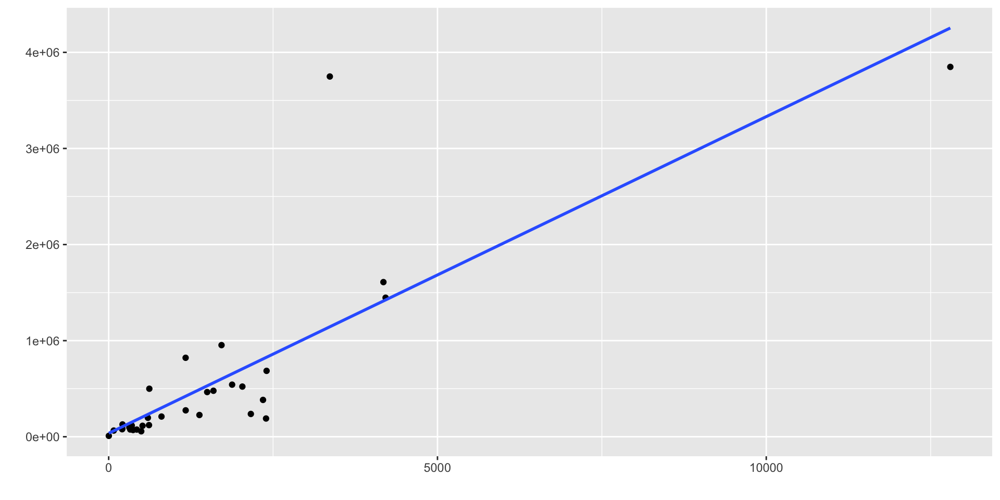

Regressões Lineares
Frederico Bertholini
Conceitos
Modelos de regressão estabelecem relações entre variáveis.
Isso é feito através de uma equação que expressa uma variável dependente em termos de uma ou mais variáveis independentes.
Visualizando relações entre variáveis
Tendência geral: \(VOTLEG = \beta_0 + \beta_1 DOAPFIS\)
4 perguntas importantes:
Quem é a varável dependente?
Quem é a independente?
Qual é o significado de \(\beta_1\)?
Qual é o significado de \(\beta_0\)?
\(\beta_0\)

\(\beta_1\)
X e Y estão relacionadas. Esta relação ocorre para todos os X´s e Y´s.
Nós coletamos alguns dados e possuímos apenas uma amostra de toda a população de X e Y. Observando a relação entre os X’s e Y’s da nossa amostra, nós tentamos estimar a relação entre X e Y na população.
\[ Y_i = \beta_0 + \beta_1 x_{i1} + \epsilon_i \]
\[ Y_{i}=\hat{\beta}_{0}+\hat{\beta}_{1} X_{i}+\hat{\varepsilon}_{i} \]
\[ \hat{Y}=b_{0}+b_{1} X \]
O que estamos testando? (e se \(\beta_1=0\))
Significância e valor-p da regressão
\[ \left\{\begin{array}{l} H_{0}: \beta_{1}=0 \\ H_{A}: \beta_{1} \neq 0 \end{array}\right. \]
Teste da significância de \(\beta_{1}\):
Valor-p < o que considerarmos adequado (0,05?) : Rejeita \(H_{0}\)
-> A relação entre X e Y é significante, ou seja, tem significância do ponto de vista estatístico.
ps.: Significante é o mesmo que significativo?
Estimativas
Resíduos com sjPlot
Quais são as características ideais da nossa reta?
Resíduo esperado é zero: \(E(e)=0\)
Erra igualmente para ambos os lados
Erra o mínimo possível
Método dos mínimos quadrados
Escolhe uma reta de forma que a soma dos erros ao quadrado seja a menor possível.
Encontrar os valores de \(b_0\) e \(b_1\) para o qual é o menor possível.

MMQ ou OLS …
Encontrar os valores de \(b_0\) e \(b_1\) que minimizem
\[ S=\sum_{i}\left[Y_{i}-\left(b_{0}+b_{1} X\right)\right]^{2} \]
Obtemos isso calculando \(b_0\) e \(b_1\) tais que
\[ \frac{\partial S}{\partial b_{0}}=0 \quad \frac{\partial S}{\partial b_{1}}=0 \]
…
Resolvendo, chega-se a:
\[ b_{1}=\frac{n \sum_{i} X_{i} Y_{i}-\left(\sum_{i} X_{i}\right)\left(\sum_{i} Y_{i}\right)}{n \sum_{i} X_{i}^{2}-\left(\sum_{i} X_{i}\right)^{2}} \]
\[ b_{0}=\frac{\left(\sum_{i} Y_{i}\right)\left(\sum_{i} X_{i}^{2}\right)-\left(\sum_{i} X_{i}\right)\left(\sum_{i} X_{i} Y_{i}\right)}{n \sum_{i} X_{i}^{2}-\left(\sum_{i} X_{i}\right)^{2}} \]
…continua
Que pode ser escrito como
\[ b_{1}=\frac{\operatorname{cov}(X, Y)}{\operatorname{var}(X)} \]
e
\[ b_{0}=\bar{Y}-b_{1} \bar{X} \]
Sob certas premissas, é possível provar que
\[ \frac{b_{1}}{s_{b_{1}}} \sim t_{n-2} \]
Onde
\[ s_{b_{1}}^{2}=\frac{s^{2}}{\sum_{i}\left(X_{i}-\bar{X}\right)^{2}} \quad s_{e}^{2}=\frac{\sum_{i} e_{i}^{2}}{n-2} \]
Isto permite:
– realizar teste de hipóteses com b1, como, por exemplo, testar sua significância
– Construir intervalos de confiança e de predição para Y em um valor de X qualquer
Premissas
Os resíduos devem ser normais, homoscedásticos e independentes.
Normalidade
Normalidade
Homocedasticidade
Independência
\(R^2\)
Modelos explicativos e preditivos
Modelos de regressão podem servir para explicar ou para prever.
Em modelos explicativos, o que importa é ter fortes razões para crer que as variáveis explicativas influenciam a variável explicada. Isso é medido por um valor-p baixo.
Em modelos preditivos, o que importa é ter um bom ajuste da reta aos dados. Isso é medido por um \(R^2\) alto.
Modelo preditivo: Previsão eleitoral (electoral forecasting)
Modelo explicativo: total de votos de legenda para deputado federal (VOTLEG) explicado por número de doações de pessoas físicas (DOAPFIS)
Eliminando outliers
Usando tidy
Usando glance
Resíduos com sjPlot
Inferência
NC = 95%
2.5 % 97.5 %
(Intercept) -126418.782 113539.9612
DOAPFIS 230.576 377.5736NC = 90%
É possível salvar o output da função summary
Call:
lm(formula = VOTLEG ~ DOAPFIS, data = .)
Residuals:
Min 1Q Median 3Q Max
-531447 -56292 -8653 27238 472375
Coefficients:
Estimate Std. Error t value Pr(>|t|)
(Intercept) -6439.41 58572.03 -0.110 0.913
DOAPFIS 304.07 35.88 8.475 3.25e-09 ***
---
Signif. codes: 0 '***' 0.001 '**' 0.01 '*' 0.05 '.' 0.1 ' ' 1
Residual standard error: 215600 on 28 degrees of freedom
Multiple R-squared: 0.7195, Adjusted R-squared: 0.7095
F-statistic: 71.82 on 1 and 28 DF, p-value: 3.249e-09Obtendo resultados detalhados
Outras informações salvas dentro do objeto podem ser vistas com names:
[1] "coefficients" "residuals" "effects" "rank"
[5] "fitted.values" "assign" "qr" "df.residual"
[9] "xlevels" "call" "terms" "model" \(R^2\)
sjPlot
Stargazer
===============================================
Dependent variable:
---------------------------
VOTLEG
-----------------------------------------------
DOAPFIS 304.075***
(35.881)
Constant -6,439.410
(58,572.030)
-----------------------------------------------
Observations 30
R2 0.719
Adjusted R2 0.709
Residual Std. Error 215,609.300 (df = 28)
F Statistic 71.818*** (df = 1; 28)
===============================================
Note: *p<0.1; **p<0.05; ***p<0.01